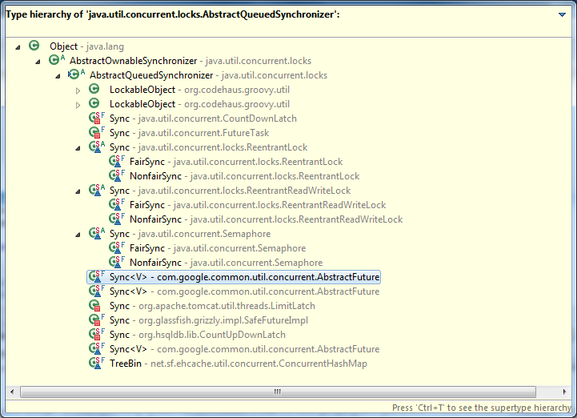
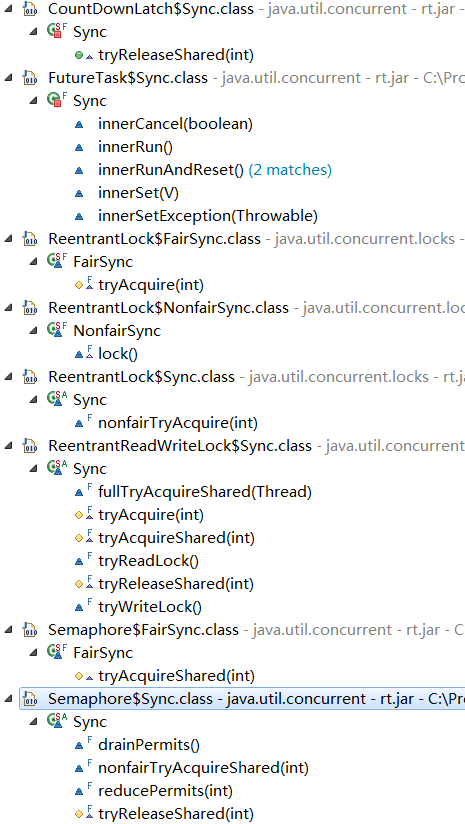
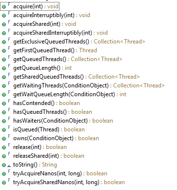
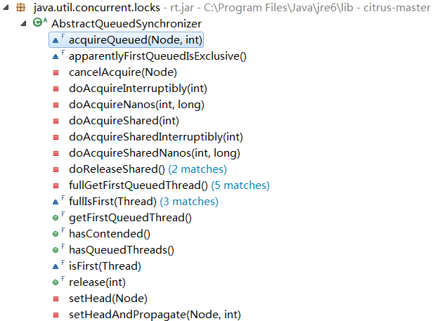
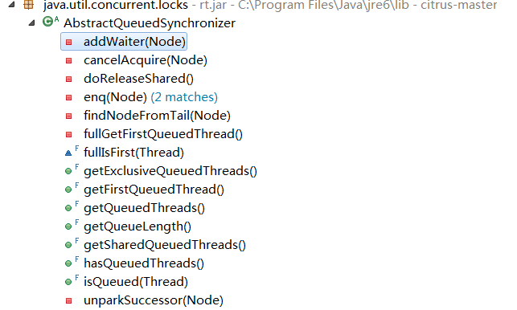
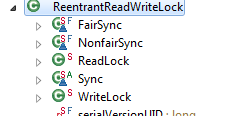

源码剖析AQS在几个同步工具类中的使用
1. 前言
AQS(AbstractQueuedSynchronizer)是 java.util.concurrent的基础。J.U.C中宣传的封装良好的好用的同步工具类Semaphore、CountDownLatch、ReentrantLock、ReentrantReadWriteLock、FutureTask等虽然各自都有不同特征，但是简单看一下源码，每个类内部都包含一个如下的内部类定义：

同时每个类内部都包含有这样一个属性，连属性名都一样！注释已经暗示了，该类的同步机制正是通过这个AQS的子类来完成的。不得不感叹：“每个强大的同步工具类，内心都有一把同样的锁！”
/** All mechanics via AbstractQueuedSynchronizer subclass */
private final Sync sync;
几种同步类提供的功能其实都是委托sync来完成。有些是部分功能，有些则是全部功能。 本文中就是想尝试比较分析下在几个同步工具类下面定义的AQS的子类如何来实现工具类要求的功能。当然包括两部分，一部分是这些工具类如何使用其Sync这种类型的同步器，也就是工具类向外提供的方法中，如何使用sync这个句柄；第二部分，就是工具类中自己定义的内部类Sync继承自AQS，那到底override了哪些方法来做到以父类AQS为基础，提供受委托工具类的功能要求。
关于第一部分，sync如何被其工具类使用，请允许我无耻的在一个文章中把一个类所有代码贴出来。
所幸方法很多，总的代码行不多，因为每个方法都是一个风格，就是换个名直接调用sync的对应方法。这是Semaphore中对sync的使用。是不是觉得写这个代码的作者比写这个文章的作者还要无耻？在其他几个工具类中，没有这么夸张，b但基本上也是这个风格，即以一个helper的方式向外面的封装类提供功能支持。所以第一个问题，在文章中说到这里，后面涉及到也只会简单描述。 主要是求索第二个问题，即每个工具类中自己定义的Sync到底是什么样子，有哪些不同的特征，其实也就是代码上看这些Sync类对父类AQS做了哪些修改。
2. AQS简介
要介绍子类的特征，父类总得大致介绍下。AQS的原理、设计等比较系统的东西，在这里就不想涉及了。可以参照《深入浅出 Java Concurrency》{#viewpost1_TitleUrl}系列的深入浅出 Java Concurrency (7): 锁机制 part 2 AQS{#viewpost1_TitleUrl}一节，谢谢这个系列，作者讲的确实非常的深入浅出！要想了解更多，可以参考Doug Lea大师的原著The java.util.concurrent Synchronizer Framework。最简单的办法其实就是的耐心把AbstractQueuedSynchronizer源码前面注释的javadoc完整的读一遍就可以了。笔者反正有这样的习惯。扎着脑袋看代码，看注释，然后自己看看是否能把一个package有个系统的视图，如果需要再看相关的参考文档来确认这个系统的视图。
看一个对象有什么本事，看他的构成是什么样，远比看他由哪些行为来的要深远。其实在OOP这种以class方式承载功能的编程中，即看一个类包含的属性，比他的方法也更容易理解对象的作用。看AQS类，暂时抛开outline视图下需要两屏才能看完的重要方法（还未展开ConditionObject和Node两个重要的内部类），只看该类包含的三个重要属性的定义就能看出端倪。
private transient volatile Node head;
private transient volatile Node tail;
private volatile int state;
注释其实已经告诉我们了，Node类型的head和tail是一个FIFO的wait queue；一个int类型的状态位state。到这里也能猜到AQS对外呈现（或者说声明）的主要行为就是由一个状态位和一个有序队列来配合完成。 最简单的读一下主要的四个方法：
//获取排他锁
public final void acquire(int arg) {
if (!tryAcquire(arg) &&
acquireQueued(addWaiter(Node.EXCLUSIVE), arg))
selfInterrupt();
}
//释放排他锁
public final boolean release(int arg) {
if (tryRelease(arg)) {
Node h = head;
if (h != null && h.waitStatus != 0)
unparkSuccessor(h);
return true;
}
return false;
}
//获取共享锁
public final void acquireShared(int arg) {
if (tryAcquireShared(arg) < 0)
doAcquireShared(arg);
}
//释放共享锁
public final boolean releaseShared(int arg) {
if (tryReleaseShared(arg)) {
doReleaseShared();
return true;
}
return false;
}
分别对应锁的获取和释放，只是**shared后缀的表示一组表示共享锁，而另外一组没有后缀的表示排他锁。只用关注每个方法的第一行，都是这种try字体的风格：
if (try*****(arg)) {
}
即做一个判断，然后做获取或者释放锁。 其实AQS主要的工作思路正是如此：在获取锁时候，先判断当前状态是否允许获取锁，若是可以则获取锁，否则获取不成功。获取不成功则会阻塞，进入阻塞队列。而释放锁时，一般会修改状态位，唤醒队列中的阻塞线程。 跟踪这几个try字体的方法定义，发现一个惊人的巧合，这几个方法在AQS中居然都是一样的定义：
protected boolean tr***(int arg) {
throw new UnsupportedOperationException();
}
即都是父类中只有定义，在子类中实现。子类根据功能需要的不同，有选择的对需要的方法进行实现。父类中提供一个执行模板，但是具体步骤留给子类来定义，不同的子类有不同的实现。
3. AQS的重要方法定义
简单看下下面几个方法的源码发现定义中都涉及到了getState(),setState(int)，即对状态位state的维护。`
-
的调用，可以看的更清楚看到，说明几个同步工具类内定义的Sync类，即自定义子类中其实都涉及到对state的操作。`

而同时不小心观察到AQS中有一大组final的方法，就是子类不能覆盖的，大致看下方法内的定义，大部分都是直接或间接涉及对head和tail的操作，即对等待队列的维护。

那在AQS的子类中有没有对有序队列的操作呢？检索下对head和tail的引用即可找到结论。

对head的操作仅限于在AQS类内部，观察方法的修饰，除了final就是private，即表示这些方法不可能被子类override，或者不可能在子类中直接被调用。看下图对于tail的调用也是同样的风格，即对等待队列的操作全部不超过AQS类内部。

于是几乎可以有这样的结论：在AQS的设计中，在父类AQS中实现了对等待队列的默认实现，无论是对共享锁还是对排他锁。子类中几乎不用修改该部分功能，而state在子类中根据需要被赋予了不同的意义，子类通过对state的不同操作来提供不同的同步器功能，进而对封装的工具类提供不同的功能。 在下面尝试对以上观点在AQS各个子类在各个工具类中的使用进行验证。
4. AQS在子类中的使用
对每个考察会从如下几个方面来进行
- 工具类的主要作用
- 主要获取锁方法（其他的类似方法如对应的可以更好的处理中断和超时或者异步等特性）
- 主要释放锁方法（其他的类似方法如对应的可以更好的处理中断和超时或者异步等特性）
- 工具类的构造方法（构造方法能告诉我们一个类最在意，最根本的属性）
- Sync构造方法
- Sync接口方法
- Sync对AQS方法的override
- state的作用
- state维护重要逻辑
我们的问题就是这些AQS的子类如何配合父类AQS的框架方法来完成各个工具类不同的锁需求。分析思路是这样：
- 这个工具类是干什么用的？可以理解为是功能需求。
- 这个工具类是通过哪些方法来实现这些功能的？可以理解为分解的需求
- AQS的子类Sync是如何支持这些方法的？可以理解为需求的实现。
按照如下的思路对每个工具类尝试进行解析，只是注意以上观点，可能并没有覆盖这个工具类的所有内容(其实就是方法)和对应Sync的所有内容。为了表达清楚些，把重点方法的代码引用在文章中，并对重点语句做了标记。因为五钟同步工具类在一起说明，看上去引用的代码有点多。
1） Semaphore
先看doc中对Semaphore的功能要求：
A counting semaphore. Conceptually, a semaphore maintains a set of permits. Each acquire blocks if necessary until a permit is available, and then takes it. Each release adds a permit, potentially releasing a blocking acquirer. However, no actual permit objects are used; the Semaphore just keeps a count of the number available and acts accordingly.
信号量Semaphore的主要作用是来控制同时访问某个特定资源的操作数量，或者同时执行某个指定操作的数量。 Semaphore只是计数，不包括许可对象，并且Semaphore也不会把许可与线程对象关联起来，因此一个线程中获得的许可可以在另外一个线程中释放。关于这点的理解可以参照What is mutex and semaphore in Java ? What is the main difference ?的说明。 Semphore对外的两个方法是 acquire()和release()方法。在许可可用前会阻塞每一个 acquire()，然后再获取该许可。每调用 release() 添加一个许可，释放一个正在阻塞的获取者。
public void acquire() throws InterruptedException {
sync.acquireSharedInterruptibly(1);
}
public void release() {
sync.releaseShared(1);
}
达到这样的操作是通过同步器Sync来操作，可以是FairSync，也可以是NonfairSync。 从Sync的构造方法中，就可以看出Semphore中所谓的permit其实就是AQS中的state。
public Semaphore(int permits, boolean fair) {
sync = (fair)? new FairSync(permits) : new NonfairSync(permits);
}
Sync(int permits) {
setState(permits);
}
工具类是通过Sync的acquireSharedInterruptibly和ReleaseShared的方法提供功能。AQS中定义的这两个final方法调用的是子类对应的try*方法。在这里覆盖了tryAcquireShared和tryReleaseShared方法。每一次请求acquire()一个许可都会导致计数器减少1，同样每次释放一个许可release()都会导致计数器增加1，一旦达到了0，新的许可请求线程将被挂起。
protected final boolean tryReleaseShared(int releases) {
for (;;) {
int p = getState();
//释放锁时，许可递加
if (compareAndSetState(p, p + releases))
return true;
}
}
每次释放锁时先调用该方法时，作用就修改state值为state+release，即表示增加新释放的许可数。 而tryAcquireShared对应于FairSync，NonfairSync有两种不同的实现。 FairSync中，总是判断当前线程是等待队列的第一个线程时，获得锁，且修改state值为state-acquires。
protected int tryAcquireShared(int acquires) {
Thread current = Thread.currentThread();
for (;;) {
// FairSync中，总是判断当前线程是等待队列的第一个线程时，获得锁
Thread first = getFirstQueuedThread();
if (first != null && first != current)
return -1;
int available = getState();
//获得锁，则计数递减
int remaining = available - acquires;
if (remaining < 0 ||
compareAndSetState(available, remaining))
return remaining;
}
}
对NonfairSync，不用考虑等待队列，直接修改state许可数。
protected int tryAcquireShared(int acquires) {
return nonfairTryAcquireShared(acquires);
}
final int nonfairTryAcquireShared(int acquires) {
for (;;) {
//对NonfairSync，不用考虑等待队列，直接修改state许可数
int available = getState();
int remaining = available - acquires;
if (remaining < 0 ||
compareAndSetState(available, remaining))
return remaining;
}
}
即不管是公平还是非公平，acquire方法总是会判断是否还有许可可用，如果有，并且当前线程可以获得，则获得锁，许可数相应减少。state在此的作用就是许可数。
**总结：**在Semaphore中使用AQS的子类Sync，初始化state表示许可数，在每一次请求acquire()一个许可都会导致计数器减少1，同样每次释放一个许可release()都会导致计数器增加1。一旦达到了0，新的许可请求线程将被挂起。
2） CountDownLatch
要求完成的功能是： A synchronization aid that allows one or more threads to wait until a set of operations being performed in other threads completes. __A CountDownLatch is initialized with a given count. The await methods block until the current count reaches zero due to invocations of the countDown method, after which all waiting threads are released and any subsequent invocations of await return immediately.
就像名字Latch所表达的一样，把一组线程全部关在外面，在某个状态时候放开。即一种同步机制来保证一个或多个线程等待其他线程完成。初始化了一个count计数，当count未递减到0时候，每次调用**await**方法都会阻塞。每次调用**countDown**来是的的count递减。 这是CountDownLatch 中“规定”的该工具类应该满足的功能，详细的使用的例子不再此介绍。只是分析如何借助Sync同步器来达到以上功能的。 __ 从构造函数中可以看到该类也维护了一个计数count。这个计数其实也是通过AQS的state来完成的，
public CountDownLatch(int count) {
if (count < 0) throw new IllegalArgumentException("count < 0");
this.sync = new Sync(count);}
CountDownLatch的两个重要方法是await和countDown方法。定义分别如下。定义await方法的作用是在计数器不为0时候阻塞调用线程，为0时候立即返回；countDown方法的作用是计数递减。
public void await() throws InterruptedException {
sync.acquireSharedInterruptibly(1);
}
public void countDown() {
sync.releaseShared(1);
}
看到这两个方法最终的执行还是同步器中的对应方法。在CountDownLatch中也定义了一个继承于AQS的Sync。在前面的分析中知道父类的acquireSharedInterruptibly方法和releaseShared其实是分别调用到了子类中定义的tryAcquireShared和tryReleaseShared方法。 在CountDownLatch的Sync类中也就仅仅实现了这两个方法。
其中tryAcquireShared方法内容非常简单，只是一个三元表达式，但是这个state值为0赋值1，不为0却赋值-1。看着不太符合我们一般的用法，这主要是为了配合父类AQS中的逻辑。当state为0表示计数递减完成，则返回值为1，在父类调用中直接方法结束，不阻塞；当state不为0表示计算器递减未完成，则返回值为-1，在父类中满足小于0的条件，执行后续的阻塞操作。
public int tryAcquireShared(int acquires) {
//当state不为0表示计数递减未完成，则返回值为-1，在父类调用会阻塞
return getState() == 0? 1 : -1;
}
tryReleaseShared方法主要是对state值的维护，当已经为0，则返回false，父类releaseShared方法直接返回；当state不为0（其实就是大于0，因为count初始化是一个正数），则递减，并通过cas的方式更新state的值。
public boolean tryReleaseShared(int releases) {
// Decrement count; signal when transition to zero
for (;;) {
int c = getState();
if (c == 0)
//当已经为0，则返回false，父类releaseShared方法直接返回
return false;
//当state不为0（其实就是大于0，因为count初始化是一个正数），则递减，并通过cas的方式更新state的值。
int nextc = c-1;
if (compareAndSetState(c, nextc))
return nextc == 0;
}
}
总结：CountDownLatch 委托自定义的Sync中的，await()和**countDown**()方法来完成阻塞线程到计数器为0的功能和计数器递减功能。而该这两个方法委托给自定义的Sync的**acquireSharedInterruptibly**()和**releaseShared**(int arg)方法。真正实现对state(count)维护的是父类AQS中调用子类定义的tryAcquireShared(int)和tryReleaseShared(int)来维护计数count。计数count使用的是AQS的状态位state。每次调用countDown方法计数递减，在计数递减到0之前，调用await的线程都会阻塞。`
3）ReentrantLock
名字翻译很好，可重入锁。功能需求如下 A reentrant mutual exclusion Lock with the same basic behavior and semantics as the implicit monitor lock accessed using synchronized methods and statements, but with extended capabilities._ _A ReentrantLock is owned by the thread last successfully locking, but not yet unlocking it. A thread invoking lock will return, successfully acquiring the lock, when the lock is not owned by another thread. The method will return immediately if the current thread already owns the lock. This can be checked using methods isHeldByCurrentThread, and getHoldCount.
可重入锁应该是几种同步工具里面被用的对多的一个。标准的互斥操作，也就是一次只能有一个线程持有锁，可能是AQS中最重要的一个类。基本功能就关键字Synchronize所支持的功能。关于ReentrantLock和Synchronize的差别比较等文章很多，可以参照Java 理论与实践: JDK 5.0 中更灵活、更具可伸缩性的锁定机制和《Java Concurrency in Practice》的对应章节。 ReentrantLock对外的主要方法是lock()，tryLock()和unlock()方法，当然还有其他变种的lockInterruptibly()、tryLock(long timeout, TimeUnit unit)等。
**lock**的功能是获取锁。如果没有线程使用则立即返回，并设置state为1；如果当前线程已经占有锁，则state加1；如果其他线程占有锁，则当前线程不可用，等待。
public void lock() {
sync.lock();
}
tryLock的功能是 如果锁可用，则获取锁，并立即返回值 true。如果锁不可用，立即返回值 false。
public boolean tryLock() {
return sync.nonfairTryAcquire(1);
}
unlock的功能是尝试释放锁，如果当前线程占有锁则count减一，如果count为0则释放锁。若占有线程不是当前线程，则抛异常。
public void unlock() {
sync.release(1);
}
可以看到也是借助Sync来完成，我们下面详细看下Sync是如何实现这些”规定”的需求的。ReentrantLock的构造函数告诉我们，其支持公平和非公平两种锁机制。
public ReentrantLock(boolean fair) {
sync = (fair)? new FairSync() : new NonfairSync();
}
在该类中对应定了两种FairSync和NonfairSync两种同步器，都继承者AQS。可以看到对应执行的是lock、release、和Sync的nonfairTryAcquire。从前面AQS源码知道release是在父类AQS中定义的方法，lock和nonfairTryAcquire是这个Sync中特定的方法，不是对父类对应方法的覆盖。 lock方法有对于FairSync和NoFairSync有两种不同的实现，对于非公平锁只要当前没有线程持有锁，就将锁给当前线程；而公平锁不能这么做，总是调用acquire方法来和其他线程一样公平的尝试获取锁。
/**NoFairSync**/
final void lock() {
if (compareAndSetState(0, 1))
//对于非公平锁只要当前没有线程持有锁，就将锁给当前线程
setExclusiveOwnerThread(Thread.currentThread());
else
acquire(1);
}
/**FairSync**/
final void lock() {
acquire(1);
}
acquire(int arg)方法是在父类AQS中定义，在其实现中先会调用子类的**tryAcquire**(int arg)方法。 对于非公平锁，通过state是否为0判断，当前是否有线程持有锁，如果没有则把锁分配给当前线程；否则如果state不为0，说明当前有线程持有锁，则判断持有锁的线程是否就是当前线程，如果是增加state计数，表示持有锁的线程的重入次数增加。当然增加重入数也会检查是否超过最大值。
protected final boolean tryAcquire(int acquires) {
return nonfairTryAcquire(acquires);
}
final boolean nonfairTryAcquire(int acquires) {
final Thread current = Thread.currentThread();
int c = getState();
if (c == 0) {
//通过state是否为0判断，当前是否有线程持有锁，如果没有则把锁分配给当前线程
if (compareAndSetState(0, acquires)) {
setExclusiveOwnerThread(current);
return true;
}
}
else if (current == getExclusiveOwnerThread()) {
//否则如果state不为0，说明当前有线程持有锁，则判断持有锁的线程是否就是当前线程，如果是增加state计数，表示持有锁的线程的重入次数增加
int nextc = c + acquires;
if (nextc < 0) // overflow
throw new Error("Maximum lock count exceeded");
setState(nextc);
return true;
}
return false;
}
对于公平锁，其**tryAcquire**(int arg)方法中，如果state为0表示没有线程持有锁，会检查当前线程是否是等待队列的第一个线程，如果是则分配锁给当前线程；否则如果state不为0，说明当前有线程持有锁，则判断持有锁的线程释放就是当前线程，如果是增加state计数，表示持有锁的线程的重入次数增加。
protected final boolean tryAcquire(int acquires) {
final Thread current = Thread.currentThread();
int c = getState();
if (c == 0) {
if (isFirst(current) &&
compareAndSetState(0, acquires)) {
//如果state为0表示没有线程持有锁，会检查当前线程是否是等待队列的第一个线程，如果是则分配锁给当前线程
setExclusiveOwnerThread(current);
return true;
}
}
else if (current == getExclusiveOwnerThread()) {
//如果state不为0，说明当前有线程持有锁，则判断持有锁的线程释放就是当前线程，如果是增加state计数，表示持有锁的线程的重入次数增加
int nextc = c + acquires;
if (nextc < 0)
throw new Error("Maximum lock count exceeded");
setState(nextc);
return true;
}
return false;
}
比较公平锁机制和非公平锁机制的差别仅仅在于如果当前没有线程持有锁，是优先把锁分配给当前线程，还是优先分配给等待队列中队首的线程。 释放锁时候调用AQS的**release**(int arg)方法，前面定义知道父类的该方法会先调用子类的**tryRelease**(int arg)方法。在该方法中主要作用是state状态位减少release个，表示释放锁，如果更新后的state为0；表示当前线程释放锁，如果不为0，表示持有锁的当前线程重入数减少。
protected final boolean tryRelease(int releases) {
int c = getState() - releases; //state状态位减少release个
if (Thread.currentThread() != getExclusiveOwnerThread())
throw new IllegalMonitorStateException();
boolean free = false;
if (c == 0) {
//如果更新后的state为0，表示当前线程释放锁
free = true;
setExclusiveOwnerThread(null);
}//如果不为0，表示持有锁的当前线程重入数减少。
setState(c);
return free;
}
总结： ReentrantLock中定义的同步器分为公平的同步器和非公平的同步器。在该同步器中state状态位表示当前持有锁的线程的重入次数。在获取锁时，通过覆盖AQS的**tryAcquire**(int arg)方法，如果没有线程持有则立即返回，并设置state为1；如果当前线程已经占有锁，则state加1；如果其他线程占有锁，则当前线程不可用。释放锁时，覆盖了AQS的**tryRelease**(int arg)，在该方法中主要作用是state状态位减少release个，表示释放锁，如果更新后的state为0，表示当前线程释放锁，如果不为0，表示持有锁的当前线程重入数减少。
4）ReentrantReadWriteLock可重入读写锁
读写锁的要求是： A ReadWriteLock maintains a pair of associated locks, one for read-only operations and one for writing. The read lock may be held simultaneously by multiple reader threads, so long as there are no writers. The write lock is exclusive. All ReadWriteLock implementations must guarantee that the memory synchronization effects of writeLock operations (as specified in the Lock interface) also hold with respect to the associated readLock. That is, a thread successfully acquiring the read lock will see all updates made upon previous release of the write lock.
即读和读之间是兼容的，写和任何操作都是排他的。这种锁机制在数据库系统理论中应用的其实更为普遍。 允许多个读线程同时持有锁，但是只有一个写线程可以持有锁。读写锁允许读线程和写线程按照请求锁的顺序重新获取读取锁或者写入锁。当然了只有写线程释放了锁，读线程才能获取重入锁。写线程获取写入锁后可以再次获取读取锁，但是读线程获取读取锁后却不能获取写入锁。 ReentrantReadWriteLock锁从其要求的功能上来看，是对前面的ReentrantLock的扩展，因此功能复杂度上来说也提高了，看看该类下面定义的内部类，除了支持公平非公平的Sync外，还有两种不同的锁，ReadLock和WriteLock。

在向下进行之前，有必要回答这样一个问题，WriteLock和ReadLock好像完成的功能不一样，看上去似乎是两把锁。ReentrantReadWriteLock中分别通过两个public的方法**readLock**()和**writeLock**()获得读锁和写锁。
private final ReentrantReadWriteLock.ReadLock readerLock;
private final ReentrantReadWriteLock.WriteLock writerLock;
private final Sync sync;
public ReentrantReadWriteLock.WriteLock writeLock() { return writerLock; }
public ReentrantReadWriteLock.ReadLock readLock() { return readerLock; }
但是如果是两把锁，可以实现前面功能要求的读锁和读锁直接的兼容，写锁和写锁直接的互斥，这本身共享锁和排他锁就能满足要求，但是如何实现对同一个对象上读和写的控制？明显，只有一把锁才能做到。 看上面代码片段时候，不小心看到了一个熟悉的字段Sync，前面的几个同步工具我们知道了，这些工具类的所有操作最终都是委托给AQS的对应子类Sync来完成，这里只有一个同步器Sync，那是不是就是只有一把锁呢。看看后面的构造函数会验证我们的猜想。
public ReentrantReadWriteLock(boolean fair) {
sync = (fair)? new FairSync() : new NonfairSync();
//使用了同一个this，即统一this里面的同一个sync来构造读锁和写锁
readerLock = new ReadLock(this);
writerLock = new WriteLock(this);
}
没错，ReadLock和WriteLock使用的其实是一个private的同步器Sync。 下面看下可重入读写锁提供哪些锁的方法来满足上面的需求的。
看到ReadLock提供了**lock**()、**lockInterruptibly**()、**tryLock**()、**tryLock**(long timeout, TimeUnit unit)和**unlock**()方法。我们看下主要的几个方法的实现如下：**lock**()方法的作用是获取读锁；**tryLock**()的作用是尝试当前没有其他线程当前持有写锁时获取读锁；**unlock**方法的作用是释放读锁。
public void lock() {
sync.acquireShared(1);
}
public boolean tryLock() {
return sync.tryReadLock();
}
public void unlock() {
sync.releaseShared(1);
}
分别调用到Sync的三个方法**acquireShared**(int arg) 、**releaseShared**(int arg)和 tryReadLock()方法，其中前两个是AQS父类中定义的，后一个是该Sync中根据自己需要实现的方法。 前面AQS父类的介绍中知道，**acquireShared**(int arg) 和**releaseShared**(int arg)方法是在父类中定义的，调用子类的对应try字体的方法，我们看下在子类Sync中定义对应的try*字体的方法怎么满足功能的。先看acquireShared中定义的tryAcquireShared
protected final int tryAcquireShared(int unused) {
Thread current = Thread.currentThread();
int c = getState();
if (exclusiveCount(c) != 0 &&
getExclusiveOwnerThread() != current)
//如果有排他锁，且持有排他锁的线程不是当前线程，则获取失败。
return -1;
if (sharedCount(c) == MAX_COUNT)
//否则如果已经加读锁的个数超过允许的最大值，抛出异常
throw new Error("Maximum lock count exceeded");
if (!readerShouldBlock(current) &&
compareAndSetState(c, c + SHARED_UNIT)) {
//否则检查是否需要阻塞当前线程，如果不阻塞，则使用CAS的方式给更新状态位state。其中readerShouldBlock在Sync的两个子类中实现，根据公平非公平的策略有不同的判断条件
HoldCounter rh = cachedHoldCounter;
if (rh == null || rh.tid != current.getId())
cachedHoldCounter = rh = readHolds.get();
rh.count++;
return 1;
}
return fullTryAcquireShared(current);
}
尝试获取读锁的方法是这样的：如果有排他锁，但是持有排他锁的线程不是当前线程，则获取失败；否则如果已经加读锁的个数超过允许的最大值，抛出异常；否则检查是否需要阻塞当前线程，如果不阻塞，则使用CAS的方式给更新状态位state。其中readerShouldBlock在Sync的两个子类中实现，根据公平非公平的策略有不同的判断条件。
对应的releaseShared中调用的tryReleaseShared定义如下
protected final boolean tryReleaseShared(int unused) {
HoldCounter rh = cachedHoldCounter;
Thread current = Thread.currentThread();
if (rh == null || rh.tid != current.getId())
rh = readHolds.get();
if (rh.tryDecrement() <= 0)
throw new IllegalMonitorStateException();
for (;;) {
int c = getState();
// 释放读锁时更新状态位的值
int nextc = c - SHARED_UNIT;
if (compareAndSetState(c, nextc))
return nextc == 0;
}
}
可以看到主要的作用在准备释放读锁时更新状态位的值。 Sync中提供给ReadLock用的tryReadLock方法和tryAcquireShared内容和逻辑差不多，而且本文想着重分析的Sync对父类AQS的方法如何改变来达到需要的功能，所以这个方法这里不分析了。 可以看到加锁时候state增加了一个SHARED_UNIT，在释放锁时state减少了一个SHARED_UNIT。为什么是SHARED_UNIT，而不是1呢？这个看了下面两个方法的定义就比较清楚了。
/** Returns the number of shared holds represented in count */
static int sharedCount(int c) { return c >>> SHARED_SHIFT; }
/** Returns the number of exclusive holds represented in count */
static int exclusiveCount(int c) { return c & EXCLUSIVE_MASK; }
原来为了只用一个state状态位来表示两种锁的信息，高位16位表示共享锁的状态位，低位16位表示独占锁的状态位。至于读锁和写锁的状态位的意思，随着后面分析会逐步更清楚。 在看到这里的时候，读锁的状态位的意思应该是比较清楚，表示当前持有共享锁的线程数。有一个新的线程过了想使用共享锁，如果其他线程也只是加了共享锁，则当前线程就可以加共享锁，每加一次，状态位递加一些，因为存储在高16位，所以递加时是加一个SHARED_UNIT。
接着关注下WriteLock的方法。和 ReadLock 类似，提供出来的还是lock()、tryLock()、unlock()三个和其相似方法。
public void lock() {
sync.acquire(1);
}
public boolean tryLock( ) {
return sync.tryWriteLock();
}
public void unlock() {
sync.release(1);
}
看到分别调用了Sync的acquire() release() 和tryWriteLock方法，其中前两个都是定义在父类AQS的方法。调用了子类定义的对应try字体的方法。tryAcquire和tryRelease方法。这里我们就看下子类的这两个try*字体的方法做了哪些事情。
protected final boolean tryAcquire(int acquires) {
Thread current = Thread.currentThread();
int c = getState();
int w = exclusiveCount(c);
if (c != 0) {
//通过state的判断，当有读锁时获取不成功
//当有写锁，如果持有写锁的线程不是当前线程，则获取不成功
// (Note: if c != 0 and w == 0 then shared count != 0)
if (w == 0 || current != getExclusiveOwnerThread())
return false;
if (w + exclusiveCount(acquires) > MAX_COUNT)
throw new Error("Maximum lock count exceeded");
}//如果可以获取，则CAS的方式更新state，并设置当前线程排他的获取锁
if ((w == 0 && writerShouldBlock(current)) ||
!compareAndSetState(c, c + acquires))
return false;
setExclusiveOwnerThread(current);
return true;
}
tryAcquire中尝试获取排他锁。结合排他锁的语义和代码逻辑不难看到：通过state的判断，当有读锁时获取不成功，当有写锁，如果持有写锁的线程不是当前线程，则获取不成功。如果可以获取，则CAS的方式更新state，并设置当前线程排他的获取锁。writerShouldBlock定义在Sync的子类中，对于FaireSync和UnFairSync有不同的判断。 接下来看tryRelease方法，主要作用是在释放排他锁时候更新state，减去releases的数目。看到这里发现写锁中用到的Sync和可重入锁ReentrantLock整个逻辑都对应的差不多。
protected final boolean tryRelease(int releases) {
//释放排他锁时候更新state，减去releases的数目
int nextc = getState() - releases;
if (Thread.currentThread() != getExclusiveOwnerThread())
throw new IllegalMonitorStateException();
if (exclusiveCount(nextc) == 0) {
setExclusiveOwnerThread(null);
setState(nextc);
return true;
} else {
setState(nextc);
return false;
}
}
只是观察到写锁state更新加和减和前面的几种比较类似，直接操作的就是传入的整形参数，这在读锁的时候讲过了，因为排他锁的状态位是存储在state的低16位。
总结： ReentrantReadWriteLock中提供了两个Lock：ReentrantReadWriteLock.ReadLock和ReentrantReadWriteLock.WriteLock。对外提供功能的是两个lock，但是内部封装的是一个同步器Sync，有公平和不公平两个版本。借用了AQS的state状态位来保存锁的计数信息。高16位表示共享锁的数量，低16位表示独占锁的重入次数。在AQS子类的对应try字体方法中实现对state的维护。
5）FutureTask
先看需求 A cancellable asynchronous computation. This class provides a base implementation of Future, with methods to start and cancel a computation, query to see if the computation is complete, and retrieve the result of the computation. The result can only be retrieved when the computation has completed; the get method will block if the computation has not yet completed. Once the computation has completed, the computation cannot be restarted or cancelled.
理解其核心需求是，一个执行任务，开始执行后可以被取消，可以查看执行结果，如果执行结果未完成则阻塞。 一般表示一个输入待执行任务。在线程池中FutureTask中一般的用法就是构造一个FutureTask，然后提交execute，返回的类型还是FutureTask，调用其get方法即可得到执行结果。 run方法定义的就是任务执行的内容，在工作线程中被调用。通过构造函数可以看到FutureTask封装的了一个Runnable的对象，另外一个泛型参数result。猜也可以猜到前者就是执行的任务内容，后者是来接收执行结果的。可以看到功能还是委托给Sync对象，构造的参数是一个有执行结果的调用Callable，也可以直接使用一个Callable参数。
public FutureTask(Runnable runnable, V result) {
sync = new Sync(Executors.callable(runnable, result));
}public FutureTask(Runnable runnable, V result) {
sync = new Sync(Executors.callable(runnable, result));
}
public FutureTask(Callable<V> callable) {
if (callable == null)
throw new NullPointerException();
sync = new Sync(callable);
}
FutureTask实现了RunnableFuture接口，也即实现了Runnable和Future接口。作业线程执行的内容是FutureTask的的run方法内定义的任务内容。如线程池ThreadPoolExecutor.Worker.runTask(Runnabletask)方法可以看到在线程池的Worker线程中调用到执行任务的run方法。这里使用Sync的作用，就是在任务执行线程和提交任务（同时也是获取任务执行结果）的线程之间维持一个锁的关系，保证只有执行结束后才能获取到结果。
FutureTask的任务执行方法是
public void run() {
sync.innerRun();
}
获取执行结果的方法是
public V get() throws InterruptedException, ExecutionException {
return sync.innerGet();
}
设置执行结果的方法是
protected void set(V v) {
sync.innerSet(v);
}
能看到，都是调到对应的Sync的对应方法。最主要的是innerRun方法，通过CAS的方式设置任务执行状态位RUNNING，执行传入的回调，并把执行结果调用innerSet进行赋值。
void innerRun() {
//设置任务执行状态位RUNNING
if (!compareAndSetState(0, RUNNING))
return;
try {
runner = Thread.currentThread();
if (getState() == RUNNING) // recheck after setting thread
//获取和设置回调的结果
innerSet(callable.call());
else
releaseShared(0); // cancel
} catch (Throwable ex) {
innerSetException(ex);
}
}
在innerSet方法中设置执行状态位为执行结束，并把执行结果赋值给result。
void innerSet(V v) {
for (;;) {
int s = getState();
if (s == RAN)
return;
if (s == CANCELLED) {
releaseShared(0);
return;
}
//设置执行状态位为执行结束，并把执行结果赋值给result
if (compareAndSetState(s, RAN)) {
result = v;
releaseShared(0);
done();
return;
}
}
}
前面方法把执行结果放在result中，我们知道future接口定义的get方法来获取执行结果，那如何来判断另外一个线程已经执行完毕呢？看到FutureTask的get方法还是调用到Sync的innerGet方法。 innerGet方法根据判断执行状态来获取执行结果。acquireSharedInterruptibly方法其实调用的是子类中定义的tryAcquireShared来判断任务释放执行完毕或者取消。如果未完毕或取消，则挂起当前线程。
V innerGet() throws InterruptedException, ExecutionException {
//acquireSharedInterruptibly方法其实调用的是子类中定义的tryAcquireShared来判断任务释放执行完毕或者取消。如果未完毕或取消，则挂起当前线程
acquireSharedInterruptibly(0);
if (getState() == CANCELLED)
throw new CancellationException();
if (exception != null)
throw new ExecutionException(exception);
return result;
}
tryAcquireShared方法的定义如下，调用innerIsDone方法，根据state的状态值做出判断，如果结束则返回1，未结束返回-1。当tryAcquireShared返回-1，则在父类AQS中获取共享锁的线程会阻塞。即实现“任务未完成调用get方法的线程会阻塞”这样的功能。
protected int tryAcquireShared(int ignore) {
//调用innerIsDone方法，根据state的状态值做出判断，如果结束则返回1，未结束返回-1。当tryAcquireShared返回-1，则在父类AQS中获取共享锁的线程会阻塞。
return innerIsDone()? 1 : -1;
}
boolean innerIsDone() {
return ranOrCancelled(getState()) && runner == null;
}
private boolean ranOrCancelled(int state) {
return (state & (RAN | CANCELLED)) != 0;
}
tryReleaseShared没有做什么事情，因为不像前面四种其实都有锁的意味，需要释放锁。在FutureTask中state表示任务的执行状态，在几乎每个方法的开始都会判读和设置状态。
protected boolean tryReleaseShared(int ignore) {
runner = null;
return true;
}
**总结：**在FutureTask实现了异步的执行和提交，作为可以被Executor提交的对象。通过Sync来维护任务的执行状态，从而保证只有工作线程任务执行完后，其他线程才能获取到执行结果。AQS的子类Sync在这里主要是借用state状态位来存储执行状态，来完成对对各种状态以及加锁、阻塞的实现。
最后终于理解了这早前就算了解的类，名字为什么叫FutureTask，实现了Future接口（满足在future的某个时间获取执行结果，这是Future接口的取名的意义吧），另外在执行中作为对执行任务的封装，封装了执行的任务内容，同时也封装了执行结果，可以安全的把这个任务交给另外的线程去执行，只要执行get方法能得到结果，则一定是你想要的结果，真的是很精妙。
5. 总结对照
本文主要侧重AQS的子类在各个同步工具类中的使用情况，其实也基本涵盖了这几个同步工具类的主要逻辑，但目标并不是对这几个同步工具类的代码进行详细解析。另外AQS本身的几个final方法，才是同步器的公共基础，也不是本文的主题，也未详细展开。其实写这篇文章的一个初始目的真的只是想列出如下表格，对比下AQS中的各个子类是怎么使用state的，居然啰嗦了这么多。
| 工具类 | 工具类作用 | 工具类加锁方法 | 工具类释放锁方法 | Sync覆盖的方法 | Sync非覆盖的重要方法 | state的作用 | 锁类型 | 锁维护 |
|---|---|---|---|---|---|---|---|---|
| Semaphore | 控制同时访问某个特定资源的操作数量 | acquire：每次请求一个许可都会导致计数器减少1，，一旦达到了0，新的许可请求线程将被挂起 | release：每调用 添加一个许可，释放一个正在阻塞的获取者 | tryAcquireShared tryReleaseShared | 表示初始化的许可数 | 共享锁 | 每一次请求acquire()一个许可都会导致计数器减少1，同样每次释放一个许可release()都会导致计数器增加1，一旦达到了0，新的许可请求线程将被挂起。 | |
| CountDownLatch | 把一组线程全部关在外面，在某个状态时候放开。一种同步机制来保证一个或多个线程等待其他线程完成。 | await：在计数器不为0时候阻塞调用线程，为0时候立即返回 | countDown ：计数递减 | tryAcquireShared tryReleaseShared | 维护一个计数器 | 共享锁 | 初始化一个计数，每次调用countDown方法计数递减，在计数递减到0之前，调用await的线程都会阻塞 | |
| ReentrantLock | 标准的互斥操作，也就是一次只能有一个线程持有锁 | lock：如果没有线程使用则立即返回，并设置state为1；如果当前线程已经占有锁，则state加1；如果其他线程占有锁，则当前线程不可用，等待 tryLock：如果锁可用，则获取锁，并立即返回值 true。如果锁不可用，则此方法将立即返回值 false | unlock：尝试释放锁，如果当前线程占有锁则count减一，如果count为0则释放锁。如果占有线程不是当前线程，则抛异常 | tryAcquire tryRelease | nonfairTryAcquir | state表示获得锁的线程对锁的重入次数。 | 排他锁。 | 获取锁时，如果没有线程使用则立即返回，并设置state为1；如果当前线程已经占有锁，则state加1；如果其他线程占有锁，则当前线程不可用。释放锁时，在该方法中主要作用是state状态位减少release个，表示释放锁，如果更新后的state为0，表示当前线程释放锁，如果不为0，表示持有锁的当前线程重入数减少 |
| ReentrantReadWriteLock | 读写锁。允许多个读线程同时持有锁，但是只有一个写线程可以持有锁。写线程获取写入锁后可以再次获取读取锁，但是读线程获取读取锁后却不能获取写入锁 | ReadLock#lock ：获取读锁 ReadLock#tryLock:尝试当前没有其他线程当前持有写锁时获取读锁 WriteLock#lock：获取写锁 WriteLock#tryLock：尝试当前没有其他线程持有写锁时，呼气写锁。 | ReadLock#unlock：释放读锁 WriteLock#unlock：释放写锁 | acquireShared releaseShared tryAcquire tryRelease | tryReadLock tryWriteLock | 高16位表示共享锁的数量，低16位表示独占锁的重入次数 | 读锁：共享 写锁：排他 | 对于共享锁，state是计数器的概念。一个共享锁就相对于一次计数器操作，一次获取共享锁相当于计数器加1，释放一个共享锁就相当于计数器减1；排他锁维护类似于可重入锁。 |
| FutureTask | 封装一个执行任务交给其他线程去执行，开始执行后可以被取消，可以查看执行结果，如果执行结果未完成则阻塞。 | V get() | run() set(V) cancel(boolean) | tryAcquireShared tryReleaseShared | innerGet innerRun() innerSet innerIsCancelled | state状态位来存储执行状态RUNNING、RUN、CANCELLED | 共享锁 | 获取执行结果的线程(可以有多个)一直阻塞，直到执行任务的线程执行完毕，或者执行任务被取消。 |